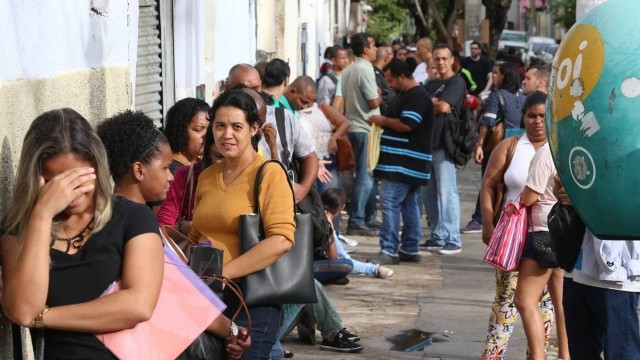

In Mozambique, the youth carry diplomas but no future. From Maputo to Nampula, thousands of young graduates wander the streets with degrees in hand, searching for jobs that do not exist. Their education, once a promise of opportunity, has become a certificate of frustration.
It is a cruel irony: families sacrifice everything to send their children to school, believing education will break the cycle of poverty. Yet, when graduation day arrives, the young face a labor market that is closed, corrupt, and indifferent. Merit is ignored, and connections are rewarded.
Everywhere, the signs of despair are visible. Young graduates sell phone credit on the streets or remain idle at home. Their knowledge is wasted, their energy suffocated, and their dignity eroded. Mozambique's youth are not without talent — they are without opportunity.
"A nation that abandons its youth abandons its future. Education without opportunity is not hope — it is betrayal."
This is not just an economic failure; it is a moral betrayal. A country that educates its youth but refuses to employ them is a country that kills its own future. The frustration grows into anger, and hopelessness into a dangerous silence.
Mozambique must decide whether to invest in its young or to bury its future under the rubble of neglect. A system that allows corruption to dictate opportunity while talent is ignored is a system that has already failed.